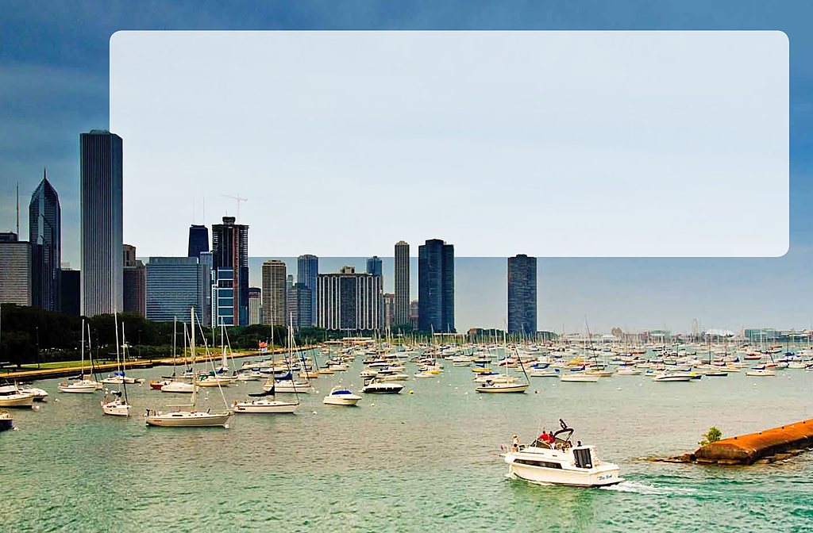

Scientists
worry
that
the
carp
will
spread
to
the
Great
Lakes.
Many
people
make
a
living
by
fishing
in
the
lakes.
If
native
fish
die
out,
the
local
fishing
industry
could
be
destroyed.
Another
concern
is
that
leaping
carp
could
scare
away
visitors
to
the
lakes.
The
Great
Lakes
are
also
connected
to
many
other
waterways.
If
carp
reach
the
Great
Lakes,
they
can
get
to
dozens
more
lakes
and
rivers.
Experts
are
working
to
prevent
this.
They
are
building
electric
underwater
fences
to
keep
the
carp
out
of
the
Great
Lakes.
They
hope
to
stop
the
invasion
before
it’s
too
late.
So
far,
Lake
Michigan
is
carp-free.
If
the
carp
make
it
here,
they
can
easily
move
into
Lake
Huron
and
other
waterways.